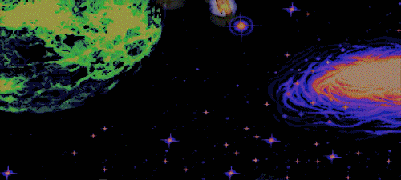
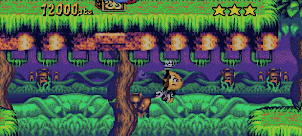
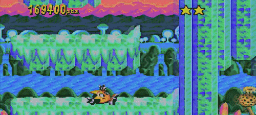
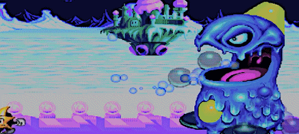

Ristar (1995):
“Another re-review for all of you. This is such an underrated gem. This game is really fun and so addicting. My only issue with the game is the fact that is so damn short. Ristar has such a fun gameplay. He’s able to grab onto anything he wants, and you can abuse this technic of his/her (I’m not sure) in order to find secret areas in really high places. I really love the way this game looks. It’s so colorful and really beautiful (sadly, this gifset doesn’t do this game any justice). If you like retro games, specially the ones from Mega Drive/Sega Genesis/Game Gear, then give this game a chance. It’s so fun.”